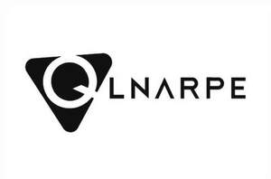

Trade Mark Journal No.2026/005 30 January 2026
UK00004323689 14 January 2026 (9)

- Class 9
- Electrical power adaptors; Power adaptors; Electrical adaptors; Electrical adapters; Power adapters; Stands adapted for laptops; Stands adapted for tablet computers; Swivelling stands adapted for computers; Stands adapted for mobile phones; Loudspeaker stands [adapted for]; Smartglasses; Wearable smartphones; Smartwatches; Headsets for smartphones; Wrist-mounted smartphones; Display screens; Visual display screens; Video display screens; Display screen filters; Screens; Docking stations; Docking stations for smartphones; Electronic docking stations; Tablet docking stations; Laptop docking stations; Chargers; Chargers for batteries; Battery chargers; USB chargers; Chargers for electric batteries; Joysticks for use with computers, other than for video games; Games software for use with video game consoles; Computer games; Games software for use with computers; Video games software; Audio- and video-receivers; Receivers (Audio-- and video- -); Audio recorders; Audio visual recordings; Audio digitisers; Wireless chargers; Wireless battery chargers; Wireless charging pads for smartphones; Battery chargers for use with telephones; Portable chargers; Projection apparatus; Holographic projection apparatus; Slide projection apparatus; Photograph projection apparatus; Transparency projection apparatus; USB hubs; USB adapters; USB Dongles [Wireless network adapters]; Printer hubs; USB modems; AC adapters for consumer video game apparatus; AC adapters for handheld electronic game apparatus; Microphones for consumer video game apparatus; Earphones for consumer video game apparatus; Monitors for consumer video game apparatuses; Cameras; Tripods for cameras; Tripods [for cameras]; Viewfinders [for cameras]; Lenses for cameras; Electricity mains (Materials for -) [wires, cables]; Materials for electricity mains [wires, cables]; Electric wires and cables; Electric cables and wires; Electrical cables; Earphones; Headphones; Earbuds; In-ear headphones; Earphones for smartphones; Smart watches; Smart bracelets; Smart phones; Smart glasses; Wearable smart phones; Batteries, electric; Electric batteries; Rechargeable electric batteries; Electric batteries for powering electric vehicles; Batteries for electric vehicles; Portable multimedia players; Handheld multimedia players; Portable multimedia players [PMPs]; Portable audio players; Portable media players; Wireless transmitters and receivers; Wireless receivers; Wireless transmitters; Radio receivers and transmitters; Radio transmitters and receivers; Microphones; Binaural microphones; Booms for microphones; Wireless speaker microphones; Microphone mixers.
Junqi Wu
Representative: DY CNUK Ltd